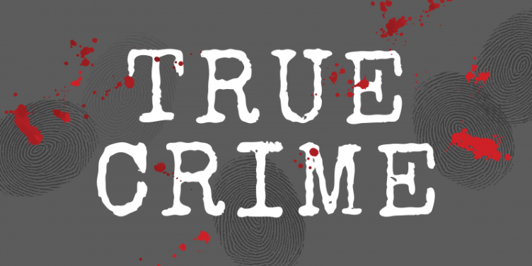
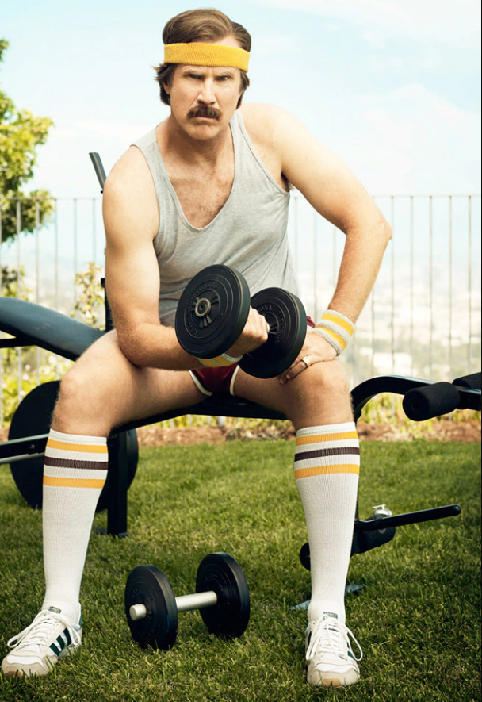
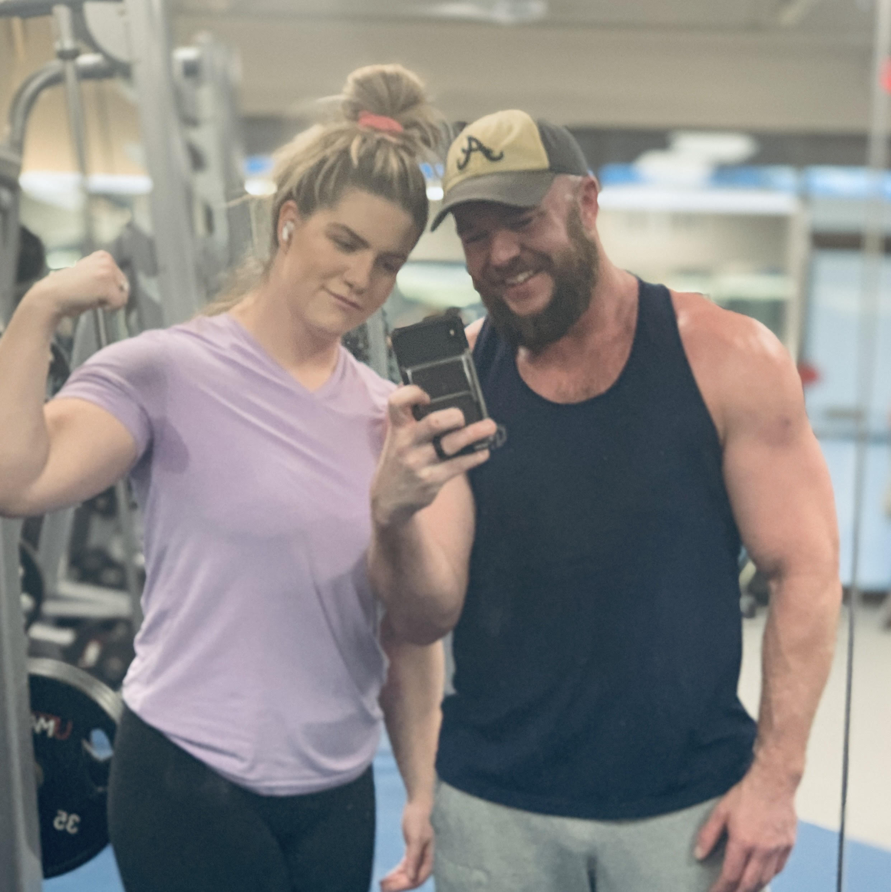
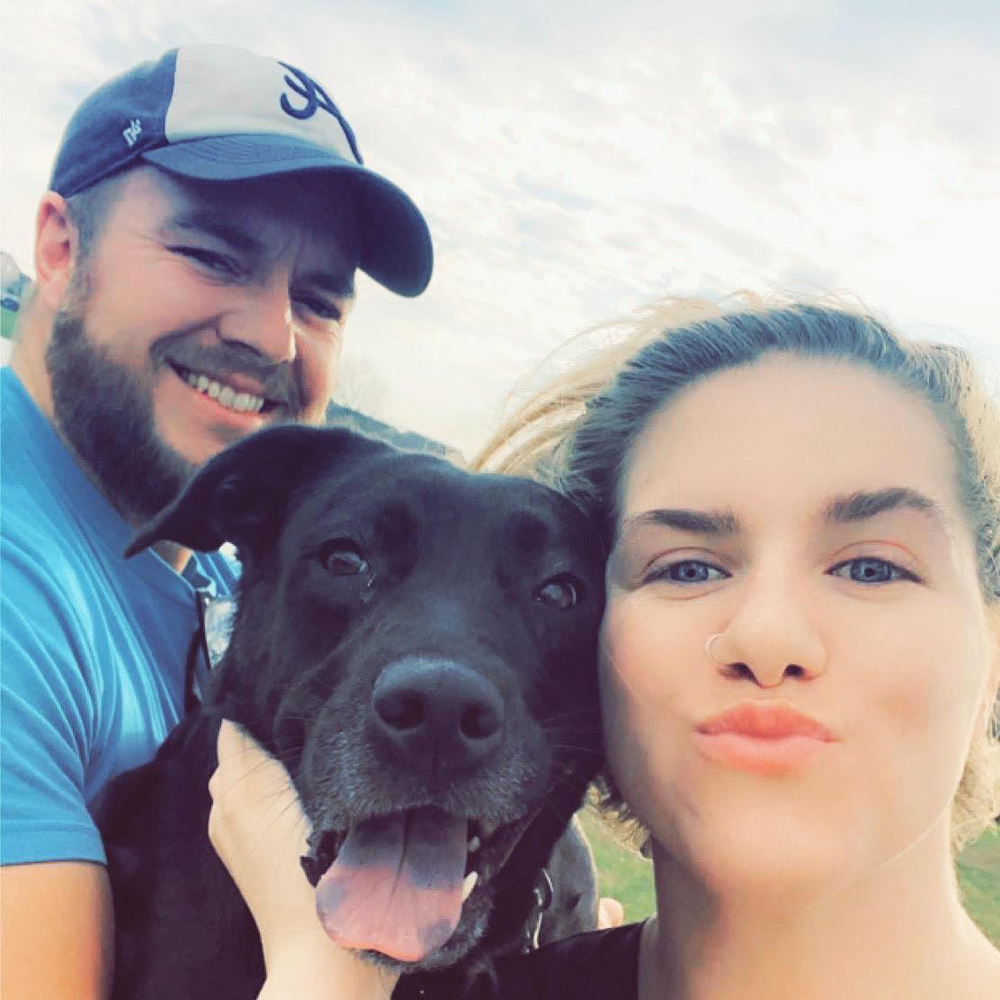
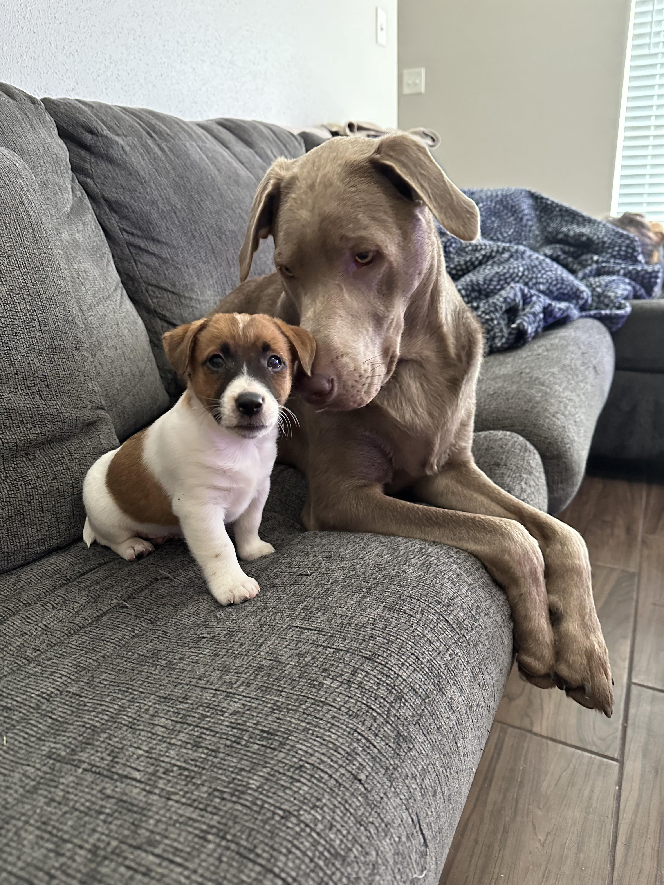

In my free time, I immerse myself in a diverse range of hobbies that keep me engaged and entertained. My interests span various domains, reflecting my fascination with different aspects of life.
One of my favorite pastimes is indulging in true crime documentaries. I find myself drawn to the intricacies of real-life mysteries, eagerly following the investigations, and delving into the minds of both criminals and investigators. The suspense and complexity of these stories captivate me, making it an enthralling and intellectually stimulating hobby.
To satisfy my craving for action and nostalgia, I often find myself watching 80s action movies. The adrenaline-pumping scenes, charismatic heroes, and over-the-top action sequences never fail to keep me on the edge of my seat. These classic films provide a perfect escape from everyday life, transporting me to a time when boldness and bravado ruled the screen.

Aside from feeding my mind, I also prioritize taking care of my body. I thoroughly enjoy working out, finding joy in pushing my physical limits and staying in shape. Whether it's hitting the gym, lifting weights, or trying out new fitness routines, the sense of achievement and the endorphin rush make it a fulfilling and rewarding hobby.
But my hobbies extend beyond personal interests. I take immense pleasure in spending quality time with my wife Kim and our three adorable doggos: Jupiter, Dexter, and Olive. Their presence brings joy and laughter to our lives, and we create cherished memories together through various activities and adventures.
|  |
|  |
|  |
Beyond leisure and relaxation, I have an insatiable thirst for knowledge and self-improvement. Engaging in continuous learning is a prominent part of my life. I love studying various subjects, from history to technology, and actively work on projects to apply my knowledge practically. The satisfaction of mastering new skills and seeing tangible results fuels my passion for learning and self-development.

In summary, my hobbies are a reflection of my multifaceted interests and desire for both mental and physical stimulation. Whether it's exploring the depths of true crime, relishing the excitement of 80s action movies, keeping fit through workouts, cherishing time with my loved ones, or engaging in continuous learning and self-improvement, each activity enriches my life in its unique way.